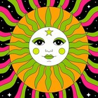

Maria Shilina
quefear
Sound & Listening
Electroacoustic improvisation, modular synthesis, contact mics — sound emerging between people, instruments and space. Holds sound checks and technical care.
Ania Shestakova
4ni4
Operations & Curation
Composer of the synth opera DIFFUSION and Web3 builder — the human voice reclaimed inside algorithmic systems. Stewards setup, ops and open-jam curation.

Colorfly
genre-fluid · shaped around the room
Flow & Energy
Reads the room like a score — sets that bend genre to the moment. Bonded with the ʻohana since ETH Tokyo; keeper of the dancefloor's pulse.
Levi Downey
Amerge × The Park × Subcult
Collectives & Collaboration
Three communities combining forces — showing how artists create, share value and release music together without the extractive pitfalls of the old industry.
Devang Gandhi
devv.playz
Musicianship & Jams
Fourteen years of piano and harmonium, teacher of two hundred students — and a Solidity developer. The bridge between the builders and the band.
Jaydeep Gadhavi
Gujarati folk · Garba
Culture & Roots
Brings the folk fire of Gujarat into the space — Garba circles where every culture is invited to dance. The local root of the orchestra.